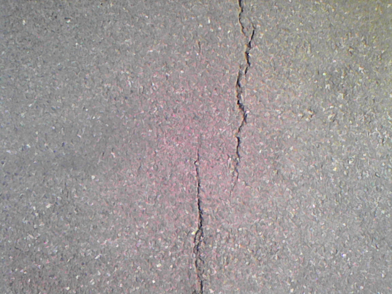
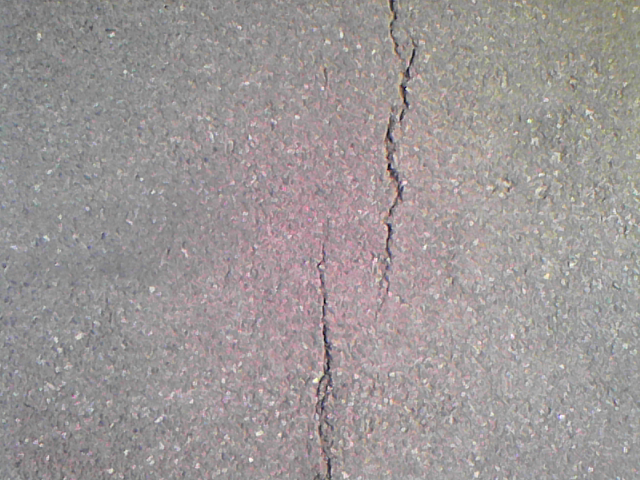

测试样本
 

|


vit介绍
针对裂纹补丁检测的二值分类任务，我们采用ViT-B/16模型，并对其进行了一系列适应性修改。由于ViT模型缺乏CNN所固有的局部感知能力，并且通常需要大量训练数据才能达到理想的性能，我们在数据增强和模型优化方面采取了新的策略。 首先，为了更好地适应裂纹补丁检测的二值分类需求，我们对ViT-B/16的损失函数进行了调整。修改后的损失函数采用交叉熵形式，旨在最小化真实标签与模型预测之间的误差。损失函数表达式如下： 𝐿 = − 1/ 𝑁 ∑ [𝑦𝑖 ∙ log(𝑝𝑖 ) + (1 − 𝑦𝑖 ) ∙ log(1 − 𝑝𝑖 )] 𝑁 𝑙=1 (1)其中，( N ) 是训练数据集的样本数，( 𝑦𝑖 ) 是第 ( 𝑖 ) 个样本的真实标签（裂纹或非裂纹），( 𝑝𝑖) 是模型对第 ( 𝑖) ) 个样本的预测概率。其次，为了克服训练数据不足的问题，我们采用了一种新的数据增强策略。我们将每一张大尺寸的路面图像分割成多个较小的图像补丁（patches），以丰富训练数据集。具体地，我们将一张 ( 4500\times 3500 ) 的路面图像分割为25个 ( 900 \times 700 ) 的图像补丁，形成一个补丁集合 (𝐺 = [𝑔1, 𝑔2, 𝑔3, … , 𝑔25] ) 。每个补丁都作为一个独立的训练样本进行处理，从而显著增加了训练数据集的规模。这些补丁被分为两类：裂纹补丁和非裂纹补丁，通过人工标注进行区分。然后，我们使用修改后的ViT-B/16模型对这些补丁进行训练，以学习裂纹与非裂纹之间的特征差异。在训练完成后，我们利用训练好的ViT模型对新的路面图像进行裂纹检测。模型会识别出包含裂纹的图像补丁，并输出这些补丁的坐标信息。为了进一步提高裂纹检测的精度和效率，我们可以将这些坐标信息作为输入，传递给一个BP神经网络（包括输入层、中间层和输出层）进行后处理。BP神经网络可以根据坐标信息对裂纹进行更精细的分割和识别，从而实现对裂纹的精确检测。